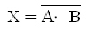
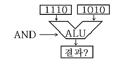
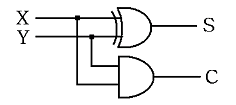
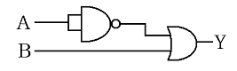
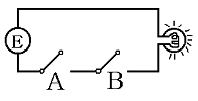

정보처리기능사 (2006-10-01 기출문제)
1과목: 전자 계산기 일반
1. 아래의 논리 대수식을 갖는 게이트(gate)는?

- NOR
- AND
- NAND
- XOR
(정답률: 68%)

2. 2진수 1011을 그레이코드(gray code)로 변환하면?
- 1010
- 0100
- 0111
- 1110
(정답률: 70%)
3. 이항(binary) 연산에 해당하는 것은?
- COMPLEMENT
- AND
- ROTATE
- SHIFT
(정답률: 83%)
4. 다음 그림의 연산결과는?

- 1010
- 1110
- 1101
- 1001
(정답률: 82%)
5. 인스트럭션 레지스터(Instruction register), 부호기, 번지 해독기, 제어계수기 등과 관계있는 장치는?
- 제어장치
- 연산장치
- 입력장치
- 기억장치
(정답률: 70%)
6. 언어번역 프로그램(Language translator)에 해당하지 않는 것은?
- 컴파일러
- 어셈블러
- 인터프리터
- 로더
(정답률: 68%)
7. 다음 논리회로는 무슨 회로인가?

- 전가산기
- 반가산기
- COUNTER
- PARITY 발생기
(정답률: 81%)
8. 클록펄스(clock pulse)에 의해서 기억 내용을 한자리씩 이동하는 레지스터는?
- 시프트레지스터
- 누산기
- B레지스터
- D레지스터
(정답률: 85%)
9. 동시에 여러 개의 입/출력 장치를 제어할 수 있는 채널(Channel)은?
- Multiplexer
- Duplex
- Register
- Selector
(정답률: 85%)
10. 인스트럭션(Instruction)을 가장 바르게 나타낸 것은?
- 명령코드부와 번지부로 구성
- 오류검색 코드형식
- 자료의 표현과 주소지정 방식
- 주프로그램과 부프로그램
(정답률: 64%)
11. 프로그램이 컴퓨터의 기종에 관계없이 수행될 수 있는 성질을 의미하는 것은?
- 가용성
- 신뢰성
- 호환성
- 안전성
(정답률: 85%)
12. 다음 회로에 해당하는 출력 Y의 논리식은?

- A' + B
- A + B'
- A' + B'
- A + B
(정답률: 78%)
13. 불(Boolean) 대수의 기본 법칙으로 옳지 않은 것은?
- A + A = A
- A · A' = 0
- A + A' = 1
- A + 0 = 0
(정답률: 73%)
14. 제어장치가 앞의 명령 실행을 완료한 후, 다음에 실행 할 명령을 기억장치로부터 가져오는 동작을 완료할 때까지의 주기를 무엇이라고 하는가?
- fetch cycle
- transfer cycle
- search time
- run time
(정답률: 66%)
15. (142)8을 10진수로 변환하면?
- 88
- 98
- 108
- 118
(정답률: 62%)
16. 2진수로 부여된 주소 값이 직접 기억장치의 피연산자가 위치한 곳을 지정하는 주소 지정 방법은?
- 즉시주소지정(Immediate Addressing)
- 직접주소지정(Direct Addressing)
- 간접주소지정(Indirect Addressing)
- 인덱스주소지정(Index Addressing)
(정답률: 66%)
17. 다음 회로(Circuit)에서 결과가 "1"(불이 켜진 상태)이 되기 위해서는 A와 B는 각각 어떠한 값을 갖는가?

- A=0 , B=1
- A=0 , B=0
- A=1 , B=1
- A=1 , B=0
(정답률: 87%)
18. 인스트럭션 형식 중 모든 데이터 처리가 누산기에 의해 이루어 지며, 연산 결과는 누산기에 저장되는 형식은?
- 0-주소 인스트럭션 형식
- 1-주소 인스트럭션 형식
- 2-주소 인스트럭션 형식
- 3-주소 인스트럭션 형식
(정답률: 47%)
19. 레지스터(Register)내로 새로운 자료(data)를 읽어 들이면 어떤 변화가 발생하는가?
- 현존하는 내용에 아무런 영향도 없다.
- 레지스터의 먼저 내용이 지워진다.
- 그 레지스터가 누산기일 때만 새 자료가 읽어진다.
- 그 레지스터가 누산기이거나 명령레지스터일 때만 자료를 읽어 들일 수 있다.
(정답률: 76%)
20. EBCDIC 코드는 몇 개의 Zone bit를 갖는가?
- 1
- 2
- 3
- 4
(정답률: 82%)
2과목: 패키지 활용
21. 스프레드시트에서 기본 입력 단위를 무엇이라고 하는가?
- 툴 바
- 셀
- 블록
- 탭
(정답률: 86%)
22. SQL 명령문 중 "DROP TABLE 학생 RESTRICT" 의 의미가 가장 적절한 것은?
- 학생 테이블만을 제거한다.
- 학생 테이블이 다른 테이블에 의해 참조중이면 제거하지 않는다.
- 학생 테이블과 이 테이블을 참조하는 다른 테이블도 함께 제거한다.
- 학생 테이블을 제거할지의 여부를 사용자에게 다시 물어본다.
(정답률: 57%)
23. 관계 데이터베이스에서 하나의 애트리뷰트가 취할 수 있는 같은 타입의 모든 원자 값들의 집합을 무엇이라고 하는가?
- 튜플(tuple)
- 도메인(domain)
- 스키마(schema)
- 인스턴스(instance)
(정답률: 72%)
24. 데이터베이스 시스템의 구성 요소로 가장 적절한 것은?
- 외부 스키마, 핵심 스키마, 내부 스키마
- 외부 스키마, 개념 스키마, 내부 스키마
- 개념 스키마, 핵심 스키마, 구체적 스키마
- 개념 스키마, 구체적 스키마, 응용 스키마
(정답률: 85%)
25. 테이블 구조를 변경하는데 사용하는 SQL 명령은?
- ALTER TABLE
- MODIFY TABLE
- DROP TABLE
- CREATE INDEX
(정답률: 75%)
26. 데이터베이스를 구성하는 개체, 속성, 관계 등 구조에 대한 정의와 이에 대한 제약 조건 등을 기술한 것은?
- 스키마
- 도메인
- 튜플
- 기본키
(정답률: 55%)
27. 수치계산과 관련된 업무에서 계산의 어려움과 비효율성을 개선하여 전표의 작성, 처리, 관리를 쉽게 할 수 있도록 한 것은?
- 스프레드시트
- 데이터베이스
- 프리젠테이션
- 워드프로세서
(정답률: 78%)
28. 프리젠테이션의 한 화면을 나타내는 용어는 무엇인가?
- 개체
- 서식파일
- 슬라이드
- 마스터
(정답률: 86%)
29. SQL문에서 검색결과에 대한 레코드의 중복을 제거하기 위해 사용하는 명령은?
- DESC
- DELETE
- COUNT
- DISTINCT
(정답률: 68%)
30. SQL 문의 형식 중 옳지 않은 것은?
- INSERT - SET - WHERE
- UPDATE - SET - WHERE
- DELETE - FROM - WHERE
- SELECT - FROM - WHERE
(정답률: 62%)
3과목: PC 운영 체제
31. 도스(MS-DOS)에서 "CONFIG.SYS" 파일에 "LASTDRIVE=D"의 설정이 의미하는 것은?
- 드라이브 용량을 의미한다.
- 드라이브 모양을 의미한다.
- 드라이브 속도를 의미한다.
- 드라이브 개수를 의미한다.
(정답률: 64%)
32. UNIX에서 현재의 작업 디렉토리가 어디인지를 확인하는 명령은?
- pwd
- rmdir
- chmod
- groups
(정답률: 75%)
33. "윈도 98"의 탐색기에서 마우스의 오른쪽 단추를 누르는 것과 같은 기능이 나타나게 하는 단축키는?
- Shift + F10
- F9
- Ctrl + F10
- Alt + F10
(정답률: 55%)
34. UNIX에서 현재 작업 중인 디렉토리의 모든 파일을 보여주는 명령은?
- cd
- mv
- ls
- tar
(정답률: 65%)
35. "윈도 98" [탐색기]의 [보기] 메뉴에서 아이콘 표시 방식으로 적당하지 않은 것은?
- 자세히
- 큰 아이콘
- 그룹 정렬
- 간단히
(정답률: 59%)
36. "윈도 98"의 탐색기에서 연속적인 여러 개의 파일을 한꺼번에 선택할 때 마우스와 함께 사용하는 키는?
- Alt 키
- Shift 키
- Ctrl 키
- Tab 키
(정답률: 68%)
37. "윈도 98"에서 현재 선택된 프로그램 창을 종료하는 단축키는?
- <Alt> + <F4>
- <Alt> + <F1>
- <Shift> + <Esc>
- <Ctrl> + <Esc>
(정답률: 80%)
38. 도스(MS-DOS)에서 사용자가 파일을 잘못해서 정보를 삭제하였을 때, 복원하는 명령어는?
- DELETE
- UNDELETE
- FDISK
- ANTI
(정답률: 78%)
39. "윈도 98"의 제어판에서 시동 디스크를 만들려면 어떤 항목을 선택하여야 하는가?
- 시스템
- 사용자
- 내게 필요한 옵션
- 프로그램 추가/제거
(정답률: 62%)
40. "윈도 98"의 작업 표시줄 위에서 오른쪽 마우스 버튼을 누르면 나타나는 도구 모음의 메뉴가 아닌 것은?
- 연결
- 설정
- 주소
- 빠른 실행
(정답률: 48%)
41. "윈도 98"의 부팅 메뉴 중 도스로 부팅하는 메뉴는?
- Normal
- Command prompt only
- Step-by-step configuration
- Safe mode
(정답률: 48%)
42. 프로세스 스케줄링 방식 중 다른 기법에 비하여 시분할(Time slice)시스템에 가장 적절한 방식은?
- HRN
- FIFO
- RR
- SJF
(정답률: 45%)
43. 도스(MS-DOS)에서 하드디스크의 파티션을 설정하고 논리적 드라이브 번호를 할당하는 명령은?
- FORMAT
- DEFRAG
- DOSKEY
- FDISK
(정답률: 68%)
44. UNIX에서 태스크 스케줄링(task-scheduling) 및 기억장치 관리(memory management) 등의 일을 수행하는 부분은?
- kernel
- shell
- utility program
- application program
(정답률: 57%)
45. "윈도98“에서는 CD-ROM Title을 드라이브에 넣으면 자동으로 실행되는 기능을 제공하는데 이 기능을 멈추게 하는 방법은?
- Shift를 누른 채 삽입
- Alt를 누른 채 삽입
- F4를 누른 채 삽입
- Ctrl을 누른 채 삽입
(정답률: 46%)
46. Which is not outer command at DOS?
- CHKDSK
- DISKCOPY
- PROMPT
- SYS
(정답률: 27%)
47. 도스(MS-DOS)의 명령에 관한 설명 중 옳지 않은 것은?
- CLS : 화면을 깨끗이 지운다.
- MD : 새로운 디렉토리를 만든다.
- CD : 현재의 디렉토리를 변경한다.
- FC : 모든 열려 있는 파일을 닫는다.
(정답률: 60%)
48. Which of the following is correct answer about Batch Processing System?
- Data processing system which requires immediate process when the data generated like seat reservation for airplane or train.
- The method that process data collected until it become some quantity or for some period or time at one time.
- The system which has many processors is to program dividing into more than two jobs concurrently under control processors.
- A terminal like device equipped with button, dials that enables the operator to communicate with computer.
(정답률: 43%)
49. 도스(MS-DOS)의 필터(Filter)명령어 중 하나 또는 여러 개의 파일에서 특정한 문자열을 검색하는 명령어는?
- FIND
- MORE
- SORT
- SEARCH
(정답률: 58%)
50. 페이지 대체 알고리즘에서 계수기를 두어 가장 오랫동안 참조되지 않은 페이지를 교체할 페이지로 선택하는 방법은?
- FIFO
- LRU
- LFU
- OPT
(정답률: 58%)
4과목: 정보 통신 일반
51. 프로토콜의 계층구성은 네트워크 구조에 따라 어떻게 구분하는가?
- 구문계층과 의미계층
- 비트계층과 블록계층
- 하위계층과 상위계층
- 직접계층과 간접계층
(정답률: 55%)
52. 정보통신시스템의 구성요소 중 데이터 전송계에 해당되지 않는 것은?
- 모뎀장치
- 데이터 전송회선
- 중앙처리장치
- 통신제어장치
(정답률: 40%)
53. 데이터회선 종단장치(DCE)로써 디지털 전송선로에 이용되는 것은?
- DSU
- MODEM
- CCU
- FEP
(정답률: 40%)
54. 신호속도인 보오(baud)속도가 1600[baud]이고, 한 신호단위가 트리비트(tribit)인 경우 전송 속도[bps]는?
- 1600[bps]
- 2400[bps]
- 4800[bps]
- 9600[bps]
(정답률: 69%)
55. 광섬유의 굴절률 및 전파모드에 해당되지 않는 것은?
- 단일모드
- 계단형 다중모드
- 분산모드
- 언덕형 다중모드
(정답률: 24%)
56. ITU-T 권고안에서 아날로그 전화통신망을 이용한 프로토콜 시리즈는?
- V 시리즈
- T 시리즈
- K 시리즈
- X 시리즈
(정답률: 29%)
57. 다음 중 전진에러수정에 해당되는 것은?
- Continuous ARQ
- Stop-and-wait ARQ
- 해밍부호
- 패리티부호
(정답률: 45%)
58. 이동통신의 접속방식에 이용되는 CDMA방식은?
- 시분할 다원접속방식
- 코드분할 다원접속방식
- 공간분할 다원접속방식
- 주파수분할 다원접속방식
(정답률: 49%)
59. On-line system 중에서 항공기나 열차의 좌석예약, 은행의 예금업무 등 Data가 발생하였을 때, 그것을 즉시 처리하는 system은?
- Frequency sharing system
- Real time system
- Batch processing system
- Duplex system
(정답률: 57%)
60. 광섬유 통신케이블의 근본 원리는 빛의 어떤 성질을 이용한 것인가?
- 반사
- 산란
- 굴절
- 흡수
(정답률: 49%)